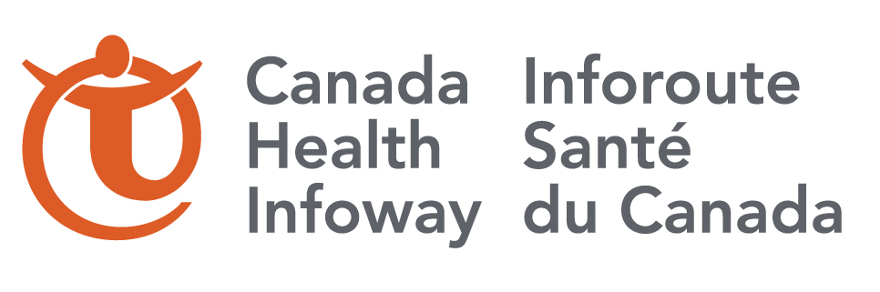

About
I am a Masters graduate (MASc.) in Electrical Engineering from the University of Toronto. I completed my undergraduate studies at the U of T as well. Contrary to the degree on paper, my areas of interest and research are in Computer Engineering. My areas of specialization are in Cloud platforms and Software-Defined Networking (SDN). My Masters thesis was on design and implementation of Autoscaling systems on Cloud platforms. I was also a Teacher's Assistant (TA) for Computer Networks and Computer Security Undergraduate courses at the U of T. My interests also include cyber-security for Cloud platforms and I have experience in Application/Network Forensics and Intrusion Detection Systems.
Professional Work Experience
Network Analyst
Bell Canada (Jan. 2015 - Aug. 2016)
I was part of the Small Data Intelligence Team, and my work consisted of two aspects: Data analytics and Application development.
I analyzed Bell's Wireline Internet data to report interesting usage trends. This provided some experience in data analytics and introduction to tools like Splunk and Deepfield.
Secondly, I built Full Stack Web applications and deployed on production environments, as described below.
chevron_right
Bellmazon Cloud Management UI: Mimic the Horizon dashboard (OpenStack Cloud platform UI) for Bell's Internal Cloud platform.
I utilized Django framework and integrated Cisco's VM management system to create the dashboard for our team.
chevron_right
End-to-End Monitoring Application: Help the Network Operations Teams troubleshoot issues.
I utilized Tornado framework and integrated with open-source tool to manage Point-to-Point-over-Ethernet (PPPoE) links from Core data center to the customer's closest router.
chevron_right
Bell Customer Lookup: A simple customer lookup based on the Bell user ID. I utilized Tornado for the back-end server. Due to privacy concerns, the source code is not posted.
